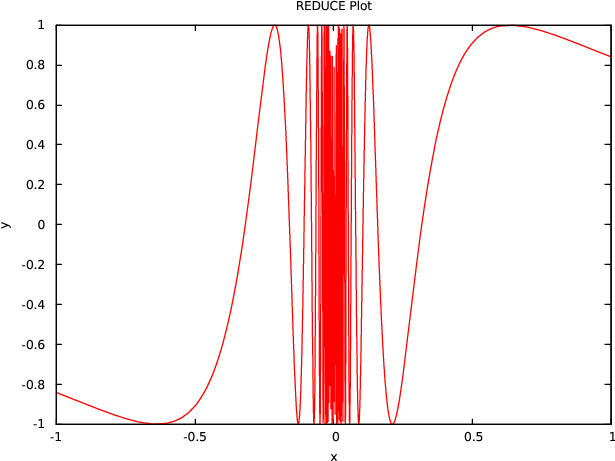
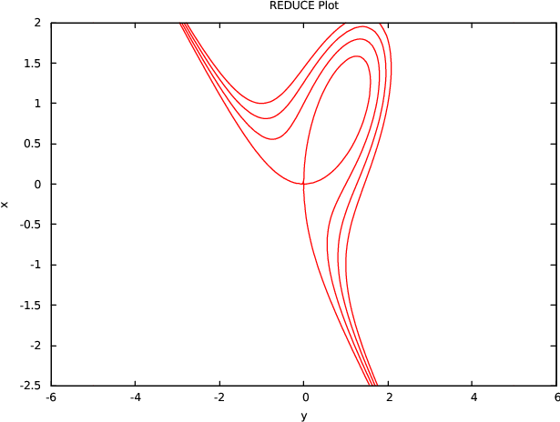
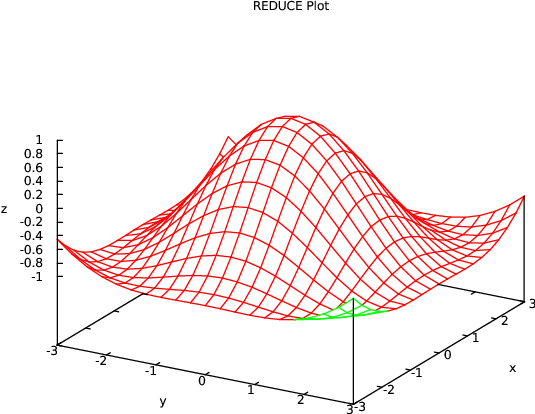
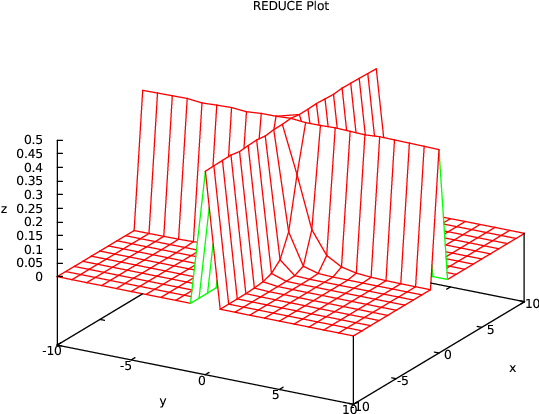
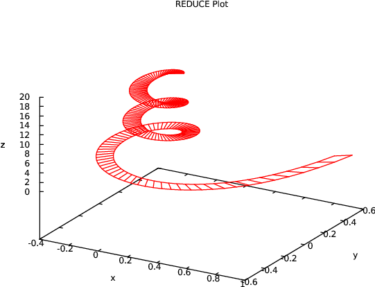
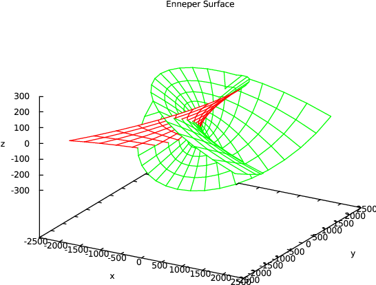
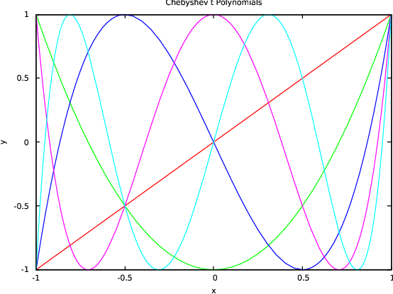
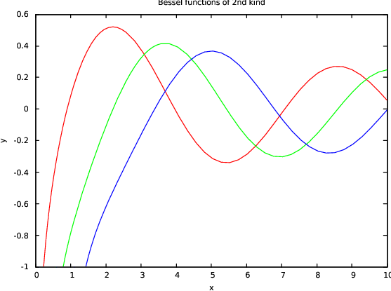

| Up | Next | Tail |
Graphical display of functions and data is done via an interface to the popular GNUPLOT package1 . It allows you to display functions in 2D and surfaces in 3D on a variety of output devices including X terminals, PC monitors, and postscript and Latex printer files.
The GNUPLOT system provides easy to use graphics output for curves or surfaces which are defined by formulas and/or data sets. GNUPLOT supports a variety of output devices such as VGA screen, postscript, picTeX, MS Windows. The REDUCE GNUPLOT package lets one use the GNUPLOT graphical output directly from inside REDUCE, either for the interactive display of curves/surfaces or for the production of pictures on paper.
Under REDUCE GNUPLOT is used as graphical output server, invoked by the command plot(...). This command can have a variable number of parameters:
Please note that a blank has to be inserted between a number and a dot, otherwise the REDUCE translator will be misled.
If a function is given as an equation the left-hand side is mainly used as a label for the axis of the dependent variable.
In two dimensions, plot can be called with more than one explicit function; all curves are drawn in one picture. However, all these must use the same independent variable name. One of the functions can be a point set or a point set list. Normally all functions and point sets are plotted by lines. A point set is drawn by points only if functions and the point set are drawn in one picture.
The same applies to three dimensions with explicit functions. However, an implicitly given curve must be the sole object for one picture.
The functional expressions are evaluated in rounded mode. This is done automatically, it is not necessary to turn on rounded mode explicitly.
Examples:
A composed graph can be defined by a rule-based operator. In that case each rule must contain a clause which restricts the rule application to numeric arguments, e.g.,
Of course, such a rule may call a procedure:
The direct use of a procedure with a numeric if clause is impossible.
The following plot options are supported in the plot command:
The following additional GNUPLOT options are supported in the plot command:
The following example works for a PostScript printer. If your printer uses a different communication, please find the correct setting for the terminal variable in the GNUPLOT documentation.
For a PostScript output, you need to add the options terminal=postscript and output="filename" to your plot command, e.g.,
The basic mesh for finding an implicitly-given curve, the x,y plane is subdivided into an initial set of triangles. Those triangles which have an explicit zero point or which have two points with different signs are refined by subdivision. A further refinement is performed for triangles which do not have exactly two zero neighbours because such places may represent crossings, bifurcations, turning points or other difficulties. The initial subdivision and the refinements are controlled by the option points which is initially set to 20: the initial grid is refined unconditionally until approximately points * points equally-distributed points in the x,y plane have been generated.
The final mesh can be visualized in the picture by setting
By default the functions are computed at predefined mesh points: the ranges are divided by the number associated with the option points in both directions.
For two dimensions the given mesh is adaptively smoothed when the curves are too coarse, especially if singularities are present. On the other hand refinement can be rather time-consuming if used with complicated expressions. You can control it with the option refine. At singularities the graph is interrupted.
In three dimensions no refinement is possible as GNUPLOT supports surfaces only with a fixed regular grid. In the case of a singularity the near neighborhood is tested; if a point there allows a function evaluation, its clipped value is used instead, otherwise a zero is inserted.
When plotting surfaces in three dimensions you have the option of hidden line removal. Because of an error in Gnuplot 3.2 the axes cannot be labeled correctly when hidden3d is used ; therefore they aren’t labelled at all. Hidden line removal is not available with point lists.
The command plotreset; deletes the current GNUPLOT output window. The next call to plot will then open a new one.
If GNUPLOT is invoked directly by an output pipe (UNIX and Windows), an eventual error in the GNUPLOT data transmission might cause GNUPLOT to quit. As REDUCE is unable to detect the broken pipe, you have to reset the plot system by calling the command plotreset; explicitly. Afterwards new graphics output can be produced.
Under Windows 3.1 and Windows NT, GNUPLOT has a text and a graph window. If you don’t want to see the text window, iconify it and activate the option update wgnuplot.ini from the graph window system menu - then the present screen layout (including the graph window size) will be saved and the text windows will come up iconified in future. You can also select some more features there and so tailor the graphic output. Before you terminate REDUCE you should terminate the graphic window by calling plotreset;. If you terminate REDUCE without deleting the GNUPLOT windows, use the command button from the GNUPLOT text window - it offers an exit function.
plotkeep If you want to use the internal GNUPLOT command sequence more than once (e.g., for producing a picture for a publication), you may set
trplot causes all GNUPLOT commands to be written additionally to the actual REDUCE output. Normally the data files are erased after calling GNUPLOT, however with plotkeep on the files are not erased.
GNUPLOT has a lot of facilities which are not accessed by the operators and parameters described above. Therefore genuine GNUPLOT commands can be sent by REDUCE. Please consult the GNUPLOT manual for the available commands and parameters. The general syntax for a GNUPLOT call inside REDUCE is
where cmd is a command name and p1,p2,… are the parameters, inside REDUCE separated by commas. The parameters are evaluated by REDUCE and then transmitted to GNUPLOT in GNUPLOT syntax. Usually a drawing is built by a sequence of commands which are buffered by REDUCE or the operating system. For terminating and activating them use the REDUCE command plotshow. Example:
In this example the function expression is transferred literally to GNUPLOT, while REDUCE is responsible for computing the function values when plot is called. Note that GNUPLOT restrictions with respect to variable and function names have to be taken into account when using this type of operation. Important: String quotes are not transferred to the GNUPLOT executable; if the GNUPLOT syntax needs string quotes, you must add doubled stringquotes inside the argument string, e.g.,
The following are taken from a collection of sample plots (gnuplot.tst) and a set of tests for plotting special functions. The pictures are made using the qt GNUPLOT device and using the menu of the graphics window to export to PDF or PNG.
A simple plot for sin(1∕x):

Some implicitly-defined curves:

A test for hidden surfaces:

This may be slow on some machines because of a delicate evaluation context:


An example taken from: Cox, Little, O’Shea, Ideals, Varieties and Algorithms:

The following examples use the specfn package to draw a collection of Chebyshev T polynomials and Bessel Y functions. The special function package has to be loaded explicitely to make the operator ChebyshevT and BesselY available.


| Up | Next | Front |